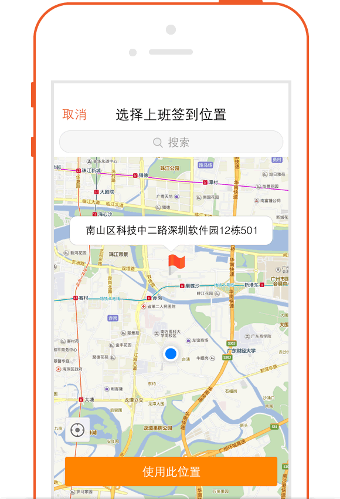
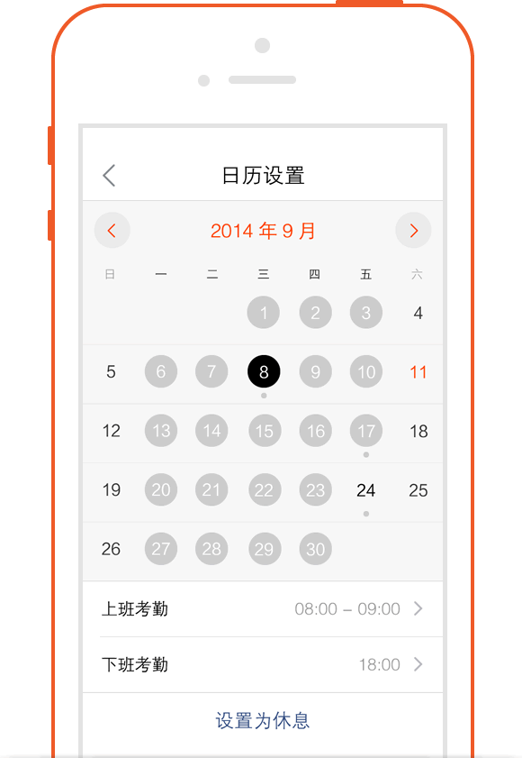

怎么使用客户
-
一,客户-新增
-
进入“CRM-客户”点击界面右上角的“＋”号，可选择名片扫描和手工输入两种方式新增。选择名片扫描，名片的方式获取各字段的值
-
选择手工输入方式，可直接手动维护各字段的值，维护好后点保存即可；也可通过添加名片（此时可直接拍照也可在相册中选择照片）的方式获取到各字段的值。

-
二,客户-转移
-
当员工由于手上客户过多、即将休假等导致无法继续负责该客户时，可把该客户转移给其他同事负责。
-
进入到该客户详细界面，点击右上角“...”，接着点击“转移给他人”，选择你需要转移的人员即可把客户转移给他人负责。转移成功后，该客户就不会显示在“我负责的客户”界面。
-
三,客户-跟进任务
-
可以根据客户的当前情况，给相关员工安排任务。（比如，给销售员工A，安排一个登门拜访当前客户的任务）
-
进入到该客户详细界面，点击“任务”按钮，进入到我的任务界面，点击界面右上角的“＋”号，可为自己安排任务也可为别人创建任务，负责人字段选择自己时，即为自己安排任务，负责人选择别人时，即为别人创建任务。

-
四,客户-查看文档
-
1. 切换考勤模式[新增 “切换考勤模式”
进入到该客户详细界面，点击“文档”按钮，可查看网页端上传的该客户相关资料。
-
五,客户-关联销售机会
-
进入到该客户动详细界面，点击界面右上角的“...”可直接选择新增该客户相关的销售机会；在客户详情界面，点击“销售机会”按钮，可查看该客户相关的销售机会，点击当前销售机会界面右上角的“＋”号，也可新增该客户相关的销售机会。
-
六,客户-关联联系人
-
进入到该客户详细界面，点击界面右上角的“...”可直接选择新增该客户相关的联系人；在客户详情界面，点击“联系人”按钮，可查看该客户相关的联系人，点击当前联系人界面右上角的“＋”号，也可新增该客户相关的联系人。